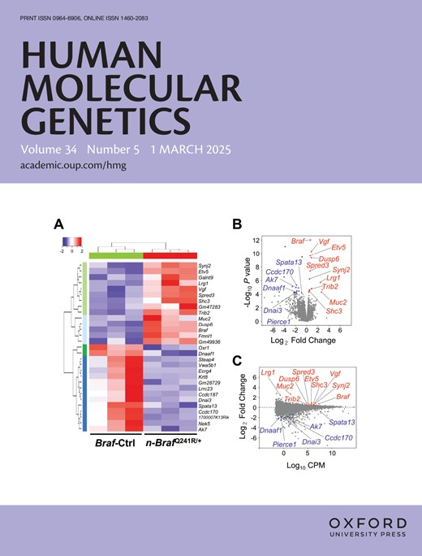

Research
Understanding the role of genetic variations leading to retinal and macular degenerative diseases represent the central theme of our research. Large-scale genomic studies have demonstrated the massive scale of genetic variations among individuals, which have revealed important insights into genetic diversity and disease susceptibility.
We focus on harnessing the power of genomic technologies to address translational and clinical bioinformatic challenges pertaining to retinal and macular degenerative diseases. We generate multiple high-throughput functional genomics data sets on the genome, transcriptome and epigenome in disease-relevant tissues/cells and use computational approaches to integrate and analyze this data to identify the molecular components and the structure of the regulatory apparatus underlying the disease.
Our ongoing projects are related to the following:(i) Identification of causal variants and genes in retinal and macular degenerative diseases
(ii) Annotating variants and genes at tissues and single-cell resolution
(iii) Identifying molecular and cellular pathways associated with the disease
(iv) Developing appropriate disease models to infer disease mechanisms
For more details click here.
Preview at glance
About the RatnapriyaLab
Meet Current Lab Members
Postdoc Associate
I did my PhD in Bioinformatics from NIPGR, New Delhi, India in 2022 and joined RatnapriyaLab in March 2023. My reserch intrests include the coding, non-coding RNAs, and multiomic/integrative analysis. Currently I am focusing on genomics study of IRD and AMD diseases.
Research Technician
I got my Master's in Data Analytics from the University of Houston - Downtown and Bachelor's in Computer Science from University of Houston. I joined this lab in July 2022 and has been working on projects related to Age-related Macular Degeneration (AMD). My work includes processing ATAC-seq, single cell RNA-seq and ATAC-seq to find meaningful discoveries to the disease.
Research Technician
I did my Masters in Computer science from University .. Currently I am ..
Trainee
I am a freshman studying bioengineering at Rice University, serving as an undergraduate researcher here at the RatnapriyaLab! I am passionate about understanding the genetic basis behind common conditions as a part of the effort of developing “personalized medicine.” In particular, I am translating this passion to age-related macular degeneration (AMD), where I am analyzing single-cell sequencing data of the retina to construct a picture of the diverse cell types at play in AMD. I am so excited to continue my work at the RatnapriyaLab!
Trainee
I am first-year medical student at Baylor College of Medicine. I did my graduation from Dartmouth College in 2023, with a major in Quantitative Social Science and a minor in Public Policy. My background as an ophthalmic assistant sparked an early interest in eye health, and I am very excited to contribute to research at the intersection of genetics and ophthalmology.
Past Members
1. Hosei Nakajima
Undergraduate students
2. Lauren Wu
3. Olivia Kaneko
4. Anya Sathyajit
5. Jayden Kim
6. Sophiya Sami
Recent Publications
1. Ratnapriya R, Grassman F, Chen R, Hewitt A, Du J, Saban DR, Klaver CCW, Ash J, Stambolian D, Tumminia SJ, Qian J, Husain D, Iyengar SK, den Hollander AI. Functional genomics in age-related macular degeneration: From genetic associations to understanding disease mechanisms. Exp Eye Res. 2025 May;254:110344. doi: 10.1016/j.exer.2025.110344. Epub 2025 Mar 13. PMID: 40089136; PMCID: PMC12048874
2. Singh A, Ratnapriya R. Integration of multiomic data identifies core-module of inherited-retinal diseases. Hum Mol Genet. 2025 Feb 17;34(5):454-465. doi: 10.1093/hmg/ddaf001. PMID: 39797395
3. Khang Ma, Hosei Nakajima, Nipa Basak, Arko Barman, Rinki Ratnapriya. Integrating explainable machine learning and transcriptomics data reveals cell-type specific immune signatures underlying macular degeneration bioRxiv 2024.10.26.24316189; doi: https://doi.org/10.1101/2024.10.26.24316189
For more publications, please visit NCBI or Google Scholar.
Funding and Support
Dr. Ratnapriya was awarded 2021 Research to Prevent Blindness Career Development Award. She is also funded by BrightFocus New Investigator Grant, and Foundation Fighting Blindness Individual Investigator Award.

Open Positions
The lab has open position for research assistant, postdoc and graduate student. We are looking for talented people interested in genomics, transcriptomics, epigenomics, computational biology, statistics, and/or molecular biology.
If you are interested in joining the lab, please send your CV and a cover letter to Rinki Ratnapriya, PhD.
Meet PI
Rinki Ratnapriya, Ph.D
Dr. Ratnapriya is an Assistant Professor in the Department of Ophthalmology, Baylor College of Medicine, Houston TX, USA. Identification of the causal genes/variants and understanding their roles in neurodegenerative diseases represent the central theme of her research. She earned her B.Sc. from Delhi University in India.
News
Publications
December 2024
Ajeet's paper was accepted for publication in Human Molecular Genetics.
Congratulations, Ajeet!
For more NEWS click here.
Contact
Social
© 2025 RatnapriyaLab. All rights reserved.